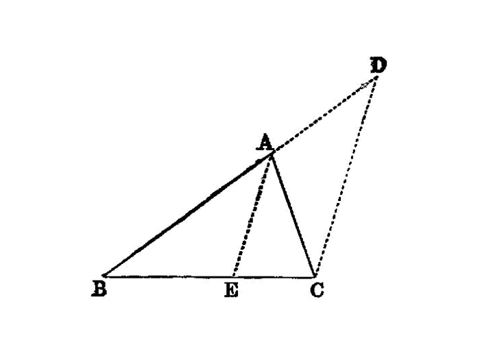

any two sides of a triangle are greater than the remaining side¶
I.20
In any triangle two sides taken together in any manner are greater than the remaining one. [1]
—Euclid
{kind=link}
For let ABC be a triangle; I say that in the triangle ABC two sides taken together in any manner are greater than the remaining one, namely
BA, AC greater than BC, AB, BC greater than AC, BC, CA greater than AB.
For let BA be drawn through to the point D, let DA be made equal to CA, and let DC be joined.
Then, since DA is equal to AC, the angle ADC is also equal to the angle ACD; [I.5]
therefore the angle BCD is greater than the angle ADC. [I.c.n.5]
And, since DCB is a triangle having the angle BCD greater than the angle BDC,
and the greater angle is subtended by the greater side, [I.19] therefore DB is greater than BC.
But DA is equal to AC;
therefore BA, AC are greater than BC.
Similarly we can prove that AB, BC are also greater than CA, and BC, CA than AB.
Therefore etc.
references¶
[I.5]: /elem.1.5 “Book 1 - Proposition 5” [I.19]: /elem.1.19 “Book 1 - Proposition 19” [I.c.n.5]: /elem.1.c.n.5 “Book 1 - Common Notion 5”